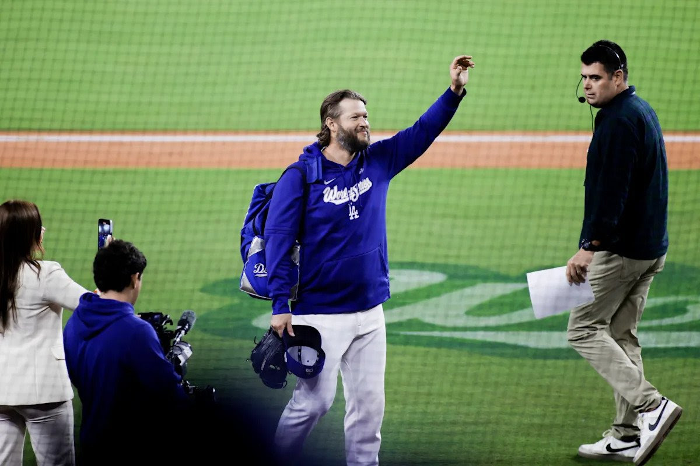
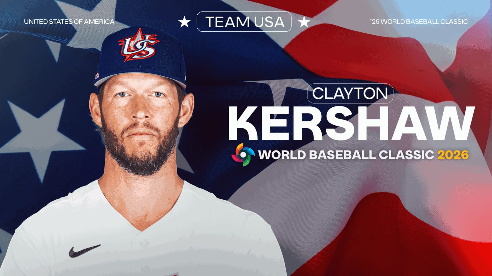

El mejor lanzador zurdo de este siglo, Clayton Kershaw, decidió postergar su retiro del béisbol activo y ponerse un uniforme, al menos como jugador, una última vez.
Luego de haber puesto fin a una ilustre carrera el pasado día 1 de noviembre, tras el séptimo juego de la Serie Mundial entre Dodgers y Blue Jays, dos meses después Kershaw dio el paso al frente para representar a su país en el ya cercano Clásico Mundial de Béisbol (WBC).
Aunque parezca increíble, el tres veces ganador del premio Cy Young y de la Serie Mundial haría su primera aparición en este torneo, ya que en la edición de 2023 no pudo vestir los colores de Estados Unidos debido a problemas con el seguro de su contrato.
Evidentemente Clayton Kershaw busca cerrar su carrera de una manera más brillante aun, si es posible, y un título en este torneo de selecciones le podría allanar el camino hacia el Salón de la Fama; aunque realmente no necesita ningún empujón para aterrizar en Cooperstown.

Su último relevo en el Juego 3 de la Serie Mundial fue clave para el título de los Dodgers.La última aparición del estelar lanzador, que cumplirá 38 años próximamente, fue un relevo espectacular en el tercer juego de la Serie Mundial, cuando salió del bullpen con dos outs y las bases llenas en la duodécima entrada, logrando sofocar la amenaza sin carreras.
Un Staff de Fantasía (Team USA)
Kershaw se une a una rotación temible junto a:
- Paul Skenes & Tarik Skubal
- Logan Webb & Joe Ryan
- Mason Miller & David Bednar (Bullpen)

Estados Unidos buscará recuperar el trono con un staff de pitcheo histórico.Estados Unidos debutará el 6 de marzo contra Brasil en Houston, en tanto también tendrá de rivales a Gran Bretaña, Italia y México. Los fanáticos estamos agradecidos de volverlo a ver lanzando esa curva de arco que tanto hizo sufrir a los bateadores por 18 años.